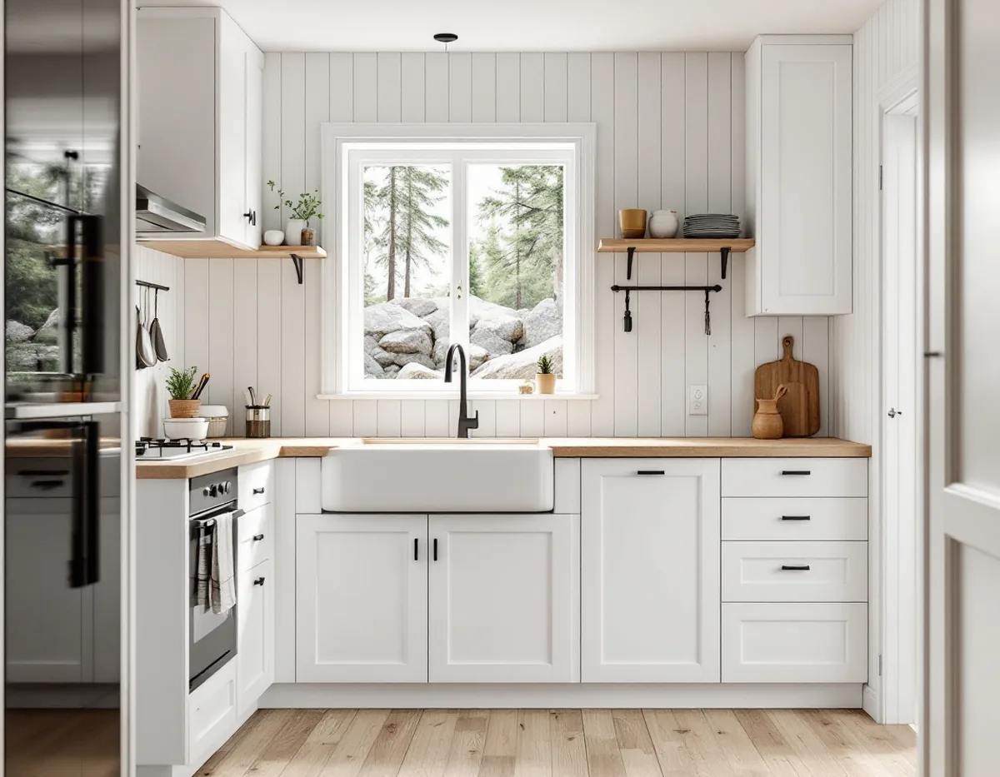
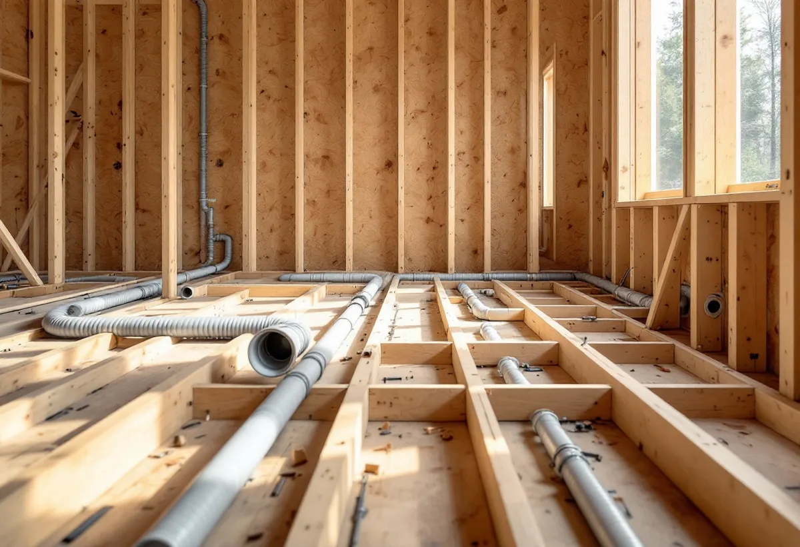

Platsbesök
Vi ser hur huset är byggt, var ledningarna går och om köket ska ligga kvar eller flyttas.
I östra Tyresö har många fritidshus blivit helårsbostäder, och när det kommunala vattnet och avloppet byggs ut blir köket ofta det första som görs om. Ett kök i en ombyggd stuga kräver annat förarbete än i en villa i Trollbäcken. Vi börjar med ett gratis platsbesök och ett skriftligt kostnadsförslag och samordnar snickeri, el och VVS.

Enligt ett kulturmiljöunderlag från Stockholms läns museum började Tyresögodsets mark säljas efter 1930, och vid slutet av 1950-talet hade nästan hälften av godset exploaterats för fritidshus. Solberga fick byggnadsplan 1952, och i Raksta började tomtförsäljningen efter en plan 1958. Underlaget konstaterar att permanentningen pågår och att en del hus är helt ombyggda.
På Brevikshalvön styckades stora arealer för fritidshus under 1930–50-talen, och kommunen har beslutat att bejaka omvandlingen till helårsboende. Detaljplanen för Fasanvägen etapp 13 omfattar till exempel 119 bostadsfastigheter.
För köket betyder det att utgångsläget varierar kraftigt. I en stuga kan köket vara en enkel vägg med diskbänk och en kanal som inte var tänkt för en kraftig fläkt, medan en villa i Trollbäcken har ett kök från en senare ombyggnad.

Tyresö kommun beskriver på sidan om VA-anslutning stegen för att ansluta sig till det kommunala ledningsnätet: anmälan och startbesked, en anvisningspunkt, anläggningsavgift, vattenmätare, anslutning och slutbesked. Till anmälan ska en situationsplan som visar ledningsdragningen på tomten och ett förslag till kontrollplan bifogas.
Den som har enskilt avlopp med slamtömning och kopplar över till det kommunala nätet ska meddela kommunens avfallsenhet, så att en sluttömning kan göras. Den gamla anläggningen ska alltså inte bara lämnas kvar.
Att lägga om köket samtidigt som huset ansluts är ofta klokt. Då kan nya ledningar dras inne i huset till den plats där diskbänken ska stå, i stället för att den gamla dragningen förlängs. Badrummet påverkas i regel av samma omläggning.
Kommunen anvisar var fastigheten ska anslutas, och anslutningen får göras först när kommunen meddelat att punkten är klar. Därför planerar vi köket så att rivning och nya ledningar inne i huset kan göras i god tid, medan själva inkopplingen mot den kommunala ledningen väntar tills beskedet har kommit.
Många som permanentar ett fritidshus bygger till, och då hamnar köket ofta i den nya delen. Tyresö kommun skriver på sidan om ändringarna i PBL att en tillbyggnad på mer än sammantaget 30 kvadratmeter kräver bygglov, och att tidigare lovbefriade tillbyggnader och skärmtak räknas in.
Även när tillbyggnaden är lovfri kan den kräva anmälan och startbesked, till exempel om husets konstruktion berörs. Det blir ofta fallet när en yttervägg öppnas för att koppla ihop det gamla köket med den nya delen. Kommunen skriver också att den inte längre granskar många åtgärder som tidigare krävde lov, så fastighetsägaren måste själv se till att reglerna följs.
Fönster, panel och förstukvist hör till samma ombyggnad, se snickare i Tyresö. Ska taket byggas ihop över gammal och ny del, se takrenovering i Tyresö.
En stuga byggd för sommarbruk har ofta självdrag eller ingen ordnad ventilation alls. När huset blir tätare och värms året runt behöver köket en fungerande frånluft, och en fläkt som kopplas till en gammal kanal kan ändra flödena i hela huset.
Ett nytt ventilationssystem eller en större ändring av det gamla kräver anmälan. En kanal genom taket är ofta bättre än genom väggen, eftersom fläkthuven då inte syns på fasaden. I områden som är kulturhistoriskt särskilt värdefulla krävs dessutom bygglov för ändringar som påverkar det yttre.
Tänk också på luften som ska ersätta den som fläkten suger ut. I ett tätare hus behövs uteluftsdon eller ett system med tilluft, annars fungerar fläkten sämre. Väggar och tak inne i den gamla delen kan vara klädda med träpanel som är värd att behålla. Ska de målas om efter renoveringen, se målare i Tyresö.
Vi ser hur huset är byggt, var ledningarna går och om köket ska ligga kvar eller flyttas.
Vi stämmer av hur köket passar ihop med VA-anslutningen och en eventuell tillbyggnad.
Du får ett skriftligt förslag med rivning, installationer och montering var för sig.
Anmälan och handlingar lämnas in, och arbetet börjar efter startbesked.
Ledningar dras, väggar och golv byggs upp och köket monteras.
Vi provar installationerna, städar och går igenom köket med dig.
Ett fritidshus räknas som småhus hos Skatteverket, men huset ska användas som bostad. Godkänt rotarbete är bland annat att montera fast köksinredning och installera vitvaror vid en omfattande renovering, att riva väggar och ändra planlösningen och att installera avlopp. Avdraget är 30 procent av arbetskostnaden, högst 50 000 kr per person och år och 75 000 kr ihop med rut.
Avdraget gäller bara arbetskostnaden, inte material. Vi drar avdraget direkt på fakturan.
Hur mycket av huset som byggs om samtidigt, om köket flyttar till en tillbyggnad, hur ledningarna ska dras till den nya anslutningspunkten och om ventilationen måste göras om. Efter ett gratis platsbesök får du ett skriftligt kostnadsförslag.
Planering, el, VVS, fläkt och väggar.
Köksrenovering i Stockholm →Takbyte, takbesiktning och plåtarbeten.
Takläggare i Tyresö →Solberga, Raksta och Brevik.
Takrenovering i Tyresö →VA-anslutning, vattenmätare och dagvatten.
Attefallshus i Tyresö →LTA-avlopp, källarbadrum och golvbrunn.
Badrumsrenovering i Tyresö →Startbesked, utstakning och slutbesked.
Byggföretag i Tyresö →Fritidshus som blivit helårshus på Brevikshalvön.
Fasadmålning i Tyresö →Timmerhus, fritidshus och villor i Tyresö.
Fasadrenovering i Tyresö →Gamla bågar och beslag i Tyresö.
Fönsterbyte i Tyresö →Fritidshus som byggts om till villor.
Golvläggare i Tyresö →Slipa och spara gamla brädgolv.
Golvslipning i Tyresö →Rödfärgade hus, stugor och interiörer i Tyresö.
Målare i Tyresö →Stuprör, rännor och beslag i Tyresö.
Plåtslagare i Tyresö →Stugor, altaner och tillbyggnader.
Snickare i Tyresö →Nytt tak med säker väg till skorstenen.
Takbyte i Tyresö →Ny tapet i rum med eldstad.
Tapetsering i Tyresö →Byggrätten i omvandlingsområdena.
Tillbyggnad i Tyresö →Rivningsavfallet, arkivet och eldstaden.
Totalrenovering i Tyresö →